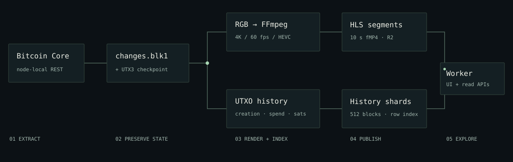
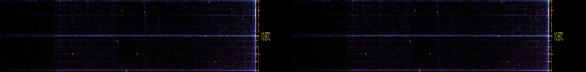

GET /api/info
Frame geometry, fps, block coverage, palettes, video URL, source version and data cutoff.
The renderer and explorer share a block-and-amount coordinate model. This reference documents that model, its data formats and the published configuration.
A node-local C++ preprocessor reads blocks through Bitcoin Core's REST API and records UTXO creation and spending. The same change stream drives both the film and the historical index used by the explorer.

The renderer produces raw RGB24 frames over TCP. FFmpeg encodes them into HEVC. Separately, utxo_history builds creation/spend records. The cloud publisher packages the video as HLS and the history as row-indexed shards. A Worker serves the UI, video and queries from private R2 storage. Public viewing does not require the rendering Mac or the Bitcoin node to be online.
Sources: preprocessor · renderer · cloud service
| Artifact | Structure and purpose | This edition |
|---|---|---|
changes.blk1 | Sequential records: 4-byte BLK\x02 marker, uint32 block height, uint32 payload size, then encoded block metadata and amount/creation-height changes. Record lengths allow structural scans without decoding every change. | 18.30 GB 0–966,360 |
checkpoint_v3.utxo | UTX3 header: last height, exact BLK byte length, final record offset and hash, and entry count. Entries store txid prefixes, original creation heights and packed output index/amount values. Written through a temporary file and rename. | 10.45 GB Matching node state |
utxo_history.bin | 64-byte BUVHIST1 header with section offsets, uint32 block timestamps, uint64 creation-height index, and 16-byte records: uint32 creation height, uint32 spend height, int64 satoshis. UINT32_MAX denotes unspent at the cutoff. | 58.49 GB 3,654,431,611 records |
| Cloud history shards | 512 creation blocks per shard; records sorted by exact Y row. A 32-byte header and 2,073 row offsets let a query read just the selected row. Later spends can be applied as patches indexed by stable record ordinal. | 2,072 plot rows 16-byte records |
The incremental history updater may place its small index arrays after the enlarged record region. Readers use the header offsets; they must not assume a fixed section order. History records retain amounts and lifecycle heights, not full outpoints. Transaction lookup is a separate, potentially ambiguous operation.
Checkpoint accuracy: v3 preserves creation heights and zero-satoshi outputs and validates the matching BLK tail before resuming. The old checkpoint caveat about lost creation heights applies to legacy formats. A node checkpoint is not a renderer checkpoint.
File sizes are measured decimal GB from the September 10 release. Record count means historical outputs, including spent ones, rather than currently unspent outputs. Zero-value outputs are retained by checkpoint accounting but have no positive logarithmic Y coordinate in the plot.
Sources: BLK framing · UTX3 · history layout · shard reader
| Mode | Behaviour | Consequence |
|---|---|---|
linear | Maps the full configured block range linearly. | Easy to compare intervals; recent blocks have little space. |
epochLog | The current epoch gets half the width; earlier epochs receive geometrically smaller shares. | More detail for recent history; boundaries change the layout. |
normalizedGeometric published | Reserves epochRatio for the current epoch. When compression is needed, older epochs divide the remaining width with weights 1, ½, ¼… | Stable positions within an epoch, with optional smooth transitions. |
continuousLog | A power law, approximately x = (h/N)^k × W, periodically resampled as the range grows. | Continuous recency emphasis with a configurable resampling cost. |
The published profile uses 105,000-block epochs and a 0.5 current share. Two epochs fit before compression is necessary. At each subsequent boundary, 120 blocks interpolate the old and new maps with smoothstep t²(3−2t). Coordinates are clamped and truncated to integer pixels; the renderer, HUD and explorer inverse mapping must agree.
Values increase upward. The central 100-satoshi to 10,000-BTC region uses a logarithmic scale. The 1–100 satoshi zone takes one third of its ordinary logarithmic height. The 10,000–100,000 BTC zone takes 15% of a central decade's height. Values at or above 100,000 BTC share the top row. The plot is [0,10,3720,2072] inside a 3840×2160 frame.
Persistent weight is max(1, |amount| / 5 BTC) with amount weighting enabled. A 100 BTC output contributes 20; a small output contributes 1. Double-precision pixel densities are updated when outputs appear or are spent. In epoch modes, an alive ledger grouped by creation height and Y row lets the renderer rebuild every surviving contribution at the exact destination pixel. This avoids the old mismatch between spreading density across columns and later removing it from a single column.
Every frame of a smooth transition rebuilds from that ledger. Diagnostics count missing ledger entries and dropped decrements. Successful release runs reported zero for both. This is accounting consistency of the rendered density; it is separate from lossy video compression and transaction-identification ambiguity.
DensityToImage maps log(density + 30) between density 1 and 500 onto palette indices 0–255. Non-positive density becomes black. The base palette is turbo; rows at or above the 10 BTC threshold use a tail blended toward warm white. Both palettes share their lower entries. The optional amount colour floor is disabled in this edition.

Flash emphasis is based on the actual total BTC changed at a pixel, normalized to 5 BTC, with no minimum per output. This prevents huge numbers of tiny outputs from looking like a high-value transfer. Distant activity uses larger marks and longer fades; amount-weighted old spends can become stars. Near the creation edge, highlights remain small to protect the new-column detail. Flash pixels follow their creation column during a slide.
Orange flow marks summarize a rolling ten-block creation window, separated from the current column by 15 pixels. Large creations receive a square-root value boost when weighting is enabled. These marks are drawn and restored without changing stored density. The HUD stays at the left and synchronizes its axis mapper every frame.
The denomination filter selects a fixed list of common CoinJoin-like amounts; it is a heuristic, not proof that a transaction is a CoinJoin. Audio synthesis converts spending activity into mono float32 impulses across five age-related frequency bands, with at most 64 concurrent events. Both are disabled in the published film.
Sources: axis mapper · density and ledger · colour transfer · flash history
| Published master | Value |
|---|---|
| Image / time | 3840×2160 · 60 fps · one frame per block |
| Codec | HEVC / libx265 · superfast · CRF 21 · yuv444p · hvc1 tag |
| Compatibility rendition | 2560×1440 · 60 fps · H.264 High 5.1 · libx264 medium / CRF 20 · yuv420p · avc1 · p=4 power-mean downscale |
| Count / duration | 967,128 frames, including a 300-frame ending · 4:28:38.800 |
| Measured master size | 84,200,687,245 bytes |
| Measured compatibility media | 19,836,027,329 bytes · 4,030 four-second HLS segments, with a 168-frame final segment |
4:4:4 retains a chroma sample at every pixel, which matters for isolated coloured points. It is still lossy HEVC; neither the master nor the preview images are exact RGB data. 4:2:0 is easier to decode on many devices but reduces colour resolution. The guide uses short 1080p H.264/VP9 previews for lighter loading.
Exact-RGB lossless experiments compared decoded frame hashes and pixels but produced a roughly 312 GB full-chain file. That oversized rendition was retired; CRF 21 is the retained delivery choice. Native 8K configurations exist, but this edition is 4K. An 8K RGB24 frame is about 99.5 MB; copies, TCP throughput, encoding and storage all matter. Apple VideoToolbox H.264 could not open the tested 8K session, and HEVC VideoToolbox did not provide the required native 4:4:4 path.
Long renders record into MKV, then remux into MP4 with faststart. A normal MP4 interrupted before its trailer can lack the moov index. MKV reduces that operational risk. Remuxing changes the container without re-encoding the pictures.
Evidence: retained master · September 10 append report · compatibility release measurements · retired artifacts
The production explorer at bitcointimelapse.com/explorer is served by a Cloudflare Worker. The Worker serves the UI and allowlisted media from the private utxo-video R2 bucket. Viewing does not involve a local tunnel.
The original single 84 GB R2 object was uploaded as a multipart object. Measured ranged reads were too slow for reliable seeking. The 4K stream instead uses ten-second fragmented MP4 HLS segments, uploaded individually and cached independently at the edge. Its packaging copies the existing HEVC bytes. The default 1440p stream is a separate H.264 transcode with four-second segments.
Video, history routing, UI assets and metadata switch together through an immutable release descriptor. Existing HLS segments and base history shards can be shared between releases. The 4K stream is /hls/v5/media.m3u8, and the default 1440p stream is /hls/compat1/media.m3u8; the legacy /video.mp4 aliases remain compatibility routes. A UI-only release can advance the site namespace without changing video or history.
The Worker validates single HTTP byte ranges, supports GET/HEAD and CORS preflight, adds CSP and content-type protections, and uses versioned cache keys for query results. Its in-memory per-isolate token buckets limit pixel queries (8/s, burst 20), txid resolution (0.5/s, burst 2), and range queries (30/s, burst 60). They are best-effort abuse controls, not globally coordinated quotas. R2 object names stay private behind an allowlist.
The public guide is plain static HTML, CSS, JavaScript and curated media published by GitHub Pages and served at bitcointimelapse.com through the Worker. First visits show the guide; entering /explorer saves a one-year browser preference for future home visits. /guide/ always opens the guide, and existing block/pixel links bypass it. Fonts are self-hosted. It does not fetch the full video or history index. HEVC 4:4:4 support depends on the browser and platform. The explorer defaults to a 2560×1440 H.264 High 5.1 / 4:2:0 stream at 60 fps. A Quality control offers the original 4K HEVC stream on browsers reporting support and automatically returns to 1440p if 4K fails. The compatibility stream is transcoded from the master with a p=4 power-mean area downscale to retain visible bright points. These frames are not pixel-identical to the master; magnifier colours are resampled while coin lookups use the original 4K coordinate grid.
Sources: request handling · release descriptor · public-domain proxy
Coordinates are native image pixels, not scaled screen coordinates. The explorer accounts for letterboxing, inverts the active X/Y maps, and asks for outputs in that creation-height and amount range at the selected block. It can also show previously spent outputs and their later fate.
The transport pauses and steps by 1 or 20 blocks. Playback speed ranges from 0.1× to 4×, with eight choices below normal speed; the selected rate is saved locally and reapplied after stream recovery. At 1× the film advances 60 blocks per second. Sharing defaults to the current block, with autoplay on or off. Pixel sharing is available only for a current visible selection and always opens paused with the details drawer. Block links omit pixel coordinates; autoplay=1 starts a block link, while autoplay=0 keeps it paused. Existing pixel links remain supported. The modal offers a frame preview, a visible URL, clipboard confirmation, X.com, email and device sharing where available.
Frame geometry, fps, block coverage, palettes, video URL, source version and data cutoff.
?block=314000&x=3000&y=1525
Ranges, unspent/past counts, satoshi totals, lifecycle chart bins and output samples. truncated and pastTruncated indicate limited returned lists.
Same block/x/y parameters. Returns coordinate bounds and dates for the hover readout; future-space queries are marked.
?d=2014-08-04
Maps a UTC date into the timestamp table. Block timestamps are not perfectly ordered; lookup uses a bounded local correction, not a calendar-time consensus guarantee.
?height=274388&satoshi=21236
Uses public Bitcoin block data to find candidate transaction IDs/output indices. Returns matches and ambiguous.
/?block=314000&x=3000&y=1525
Opens the selected block and optional pixel. Arrow keys aim; brackets step blocks; Space toggles playback.
What “exact” means here: counts and amounts come from the indexed history. A screen pixel aggregates multiple outputs; the compact index does not preserve txid/vout identity. Outputs with equal amounts in one creation block may have multiple transaction matches. “Still unspent” is evaluated at the published cutoff, not against the live chain.
Paused seeks target the midpoint of a frame to avoid a native-player rounding edge that could display the preceding frame at a near-boundary timestamp. The ending's 300 hold/fade frames do not extend the blockchain's height range.
Sources: queries · txid matching · explorer UI
The September 10 update extended the release from block 964,388 to 966,360: 1,972 new blocks. Encoded frames through 964,379 were preserved. The nine-block incomplete GOP was encoded again with the new tail and a replacement 300-frame ending: 2,281 encoded tail frames in total.
The existing compressed prefix was packet-copied into the new master. HLS reused 1,607 older segments and uploaded only five replacement/new segments. Cloud history reused base shards with spend patches and five full new/replaced shards. Video, history and metadata were checked together before cutover.
| Measured stage | Time | Result |
|---|---|---|
| Node v3 load, update and save | 5m 46.55s | Matching BLK/checkpoint through 966,360 |
| Old-prefix SHA-256 check | 1m 29.49s | 18.22 GB prefix unchanged |
| Transfer change suffix | 17.31s | 75,512,433 bytes; verified continuity |
| Local history update | 3m 50s | 15,338,763 new records; zero unmatched spends |
| Replay, pre-roll and tail encode | 50m 54.42s | 2,281 frames encoded; zero ledger misses/decrements dropped |
| Encoding within that stage | 1m 10.09s | 32.54 fps |
| Cloud history delta | 10m 19.30s | 330.5 MB uploaded |
| Master splice and faststart | 3m 47.53s | 84.15 GB; 966,661 packets |
| HLS tail packaging | 0.63s | Existing encoded payloads preserved |
| Total operational wall time | 102m 24s | Includes overlapping stages and delivery troubleshooting |
These timings are observations from one run, not performance promises; overlapping rows must not be added. The complete report records uploads, rollback, timestamp correction, verification and network failures. Roughly 49 minutes still went into reconstructing renderer state, including 1,080 historical slide rebuilds. Skipping invisible slides or adding a renderer checkpoint could reduce this cost; neither optimization is implemented in this edition.
The append scripts are anchored to that verified run's filenames, ranges and manifest. A future update must prepare fresh values and compute its closed-GOP and HLS boundaries. They are not a general unattended “update to tip” command.
Evidence: complete timed append report · retained source files and next-update procedure
| Chosen behaviour | Alternative | Why / cost |
|---|---|---|
| v3 checkpoint resume | Replay from genesis | Preserves creation heights and skips extraction work; requires a consistent checkpoint/BLK pair and hash checks. |
| Node-local REST extraction | SSH-forwarded REST | A measured 13.8 MB block took 0.156s locally vs 21.8s over a tunnel. Node-local work consumes the node's CPU and RAM. |
| 105k epochs / 50% newest | 210k halving epochs or linear time | More frequent recency emphasis; unequal horizontal distances cannot be read as equal elapsed time. |
| 120-block smoothstep slide | One-frame cut | Positions remain visually traceable; rebuilding the ledger on every transition frame is expensive. |
| Exact alive-ledger remapping in epoch modes | Redistribute the old raster | Spends subtract at the same mapped location as survivors; additional memory and rebuild work. |
| Amount-weighted density | One vote per output | Sparse valuable outputs remain visible; colours no longer mean a raw output count. |
| White-hot only ≥10 BTC | Global white-hot / unmodified turbo | Bright valuable rows without whitening ordinary bands; amount changes the colour interpretation. |
| Amount colour floor disabled | Floor colour by amount | Preserves density as the primary colour input; some sparse rows stay subtle. |
| Compressed low and top bands | Uniform logarithmic decades | More space for the middle range; extreme bands lose vertical detail, and ≥100k BTC shares one row. |
| Actual-value flash weighting | Minimum flash weight per output | Tiny-output bursts do not mimic whale spends; low-value changes create less prominent flashes. |
| 4K HEVC 4:4:4 CRF 21 | 4:2:0, lossless RGB or native 8K | Preserves more coloured point detail at manageable size; lossy and less broadly decodable than H.264 4:2:0. |
| HLS fMP4 segments | One multipart MP4 object | Measured seeking and edge caching improved; manifests and continuous timestamps add operational complexity. |
| R2 shards and spend patches | One memory-mapped cloud history file | Fits Worker constraints; oldest compressed columns can require more shard reads. |
| Compact lifecycle records | Full txid/vout per record | Keeps the index smaller; exact outpoint identity is unavailable and txid lookup can be ambiguous. |
| Append with a GOP overlap | Re-encode the whole film | Preserves the encoded prefix; a short overlap is encoded again, and old renderer state must still be replayed. |
| MKV then remux | Long direct MP4 recording | More tolerant of interruption; remux needs time and temporary disk headroom. |
allowBlkFileTruncate=false | Implicit overwrite on failure | Protects multi-GB inputs; deliberate rebuilds need explicit configuration and a fresh path. |
| Mixed txid-prefix hashes | Use raw prefix bits as map hashes | Avoids observed robin-hood hash-map overflow; compact-prefix identity still differs from full 256-bit txid storage. |
| Desktop explorer focus | Adaptive/mobile rendition | Keeps high-detail inspection central; the stopped mobile experiment is not supported. |
| Cloud-only public viewing | Serve through the rendering Mac | No home-machine dependency; requires cloud storage, delivery and release maintenance. |
Every field read by Cfg.cpp is listed below. “Required” means the JSON parser has no fallback, even when a particular task does not use that field. Production values are from the published render profile; omitted values use the parser fallback. File paths are shown as portable roles rather than a maintainer's volume path.
42 settings shown
| Setting | Parser default | Published render | Meaning |
|---|---|---|---|
bitcoinRpcUrl | Required | "http://127.0.0.1:18332" | Bitcoin Core REST base URL; despite the name, this is not a JSON-RPC endpoint. |
blkFile | Required | "path/to/changes.blk1" | Change-stream input for rendering/history, output for extraction. Adapt the path. |
utxoToChangeNumThreads | Required | 12 | Concurrent block fetching/parsing workers. |
utxoToChangeNumResources | Required | 24 | Reusable HTTP/parser resources; normally at least the worker count. |
imageWidth | Required | 3840 | Frame width in pixels; must match the encoder input. |
imageHeight | Required | 2160 | Frame height in pixels; must match the encoder input. |
graphRect | Required | [0, 10, 3720, 2072] | Plot rectangle [x, y, width, height] inside the image. |
minSatoshi | Required | 1 | Lower amount bound in satoshis; positive for logarithmic mapping. |
maxSatoshi | Required | 10000000000000 | Upper amount bound in satoshis. |
startShowAtBlockHeight | Required | 0 | First emitted block; earlier history is still replayed. |
endShowAtBlockHeight | 0 | 0 | Final block in the requested range; 0 means no explicit limit. |
skipBlocks | Required | 0 | 0 or 1 emits all blocks; values greater than 1 emit at modulo-N intervals. |
repeatLastBlockTimes | Required | 300 | Extra frames after the last block, allowing activity to fade. |
connectionIpAddr | Required | "127.0.0.1" | TCP address where FFmpeg listens for raw RGB24 frames. |
connectionSocket | Required | 12987 | TCP port for raw frames. |
colorUpperValueLimit | Required | 500 | Density mapped to the top of the logarithmic colour transfer. |
colorMap | Required | "turbo" | Base palette: viridis, magma, parula, turbo or spacious. |
colorHighlightRGB | Required | [255, 255, 255] | Base flash highlight colour, three integer RGB channels. |
colorBackgroundRGB | Required | [0, 0, 0] | Background colour, three integer RGB channels. |
checkpointFile | "" | "" | Extraction checkpoint path; empty disables checkpoint writes. |
checkpointIntervalBlocks | 10000 | 0 | Periodic checkpoint interval; 0 disables periodic saves. |
allowBlkFileTruncate | false | false (fallback) | Permit deliberate replacement of existing BLK data; keep false for updates. |
xAxisMode | "linear" | "normalizedGeometric" | linear, epochLog, normalizedGeometric or continuousLog. Unknown strings currently fall through to epochLog. |
epochBlocks | 25000 | 105000 | Number of blocks per layout epoch; published value is half a subsidy-halving interval. |
epochRatio | 0.5 | 0.5 | Width reserved for the current epoch in normalizedGeometric mode. |
epochTransitionBlocks | 0 | 120 | Smoothstep slide length at an epoch boundary; must be smaller than epochBlocks. 0 gives a cut. |
logCompressionFactor | 4.85 | 4.85 | Power exponent for continuousLog; unused by the published epoch mode. |
resampleEveryNBlocks | 100 | 100 | Rebuild interval for continuousLog; unused by the published epoch mode. |
compressLowSatoshi | false | true | Reduce the 1–100 satoshi band to one third of its normal log height. |
compressTopSatoshi | false | true | Add the compressed 10k–100k BTC band at 15% of a middle decade height. |
amountColorFloor | false | false | Experimental amount-dependent minimum palette index for rows at or above 0.1 BTC. |
amountWeightedDensity | false | true | Weight persistent density by max(1, amount/5 BTC); use actual value for flashes. |
whiteHotTail | false | true | Blend the upper palette toward warm white. |
whiteHotTailMinSatoshi | 0 | 1000000000 | Apply white-hot only above this nonnegative amount; 0 means all rows. Ignored if whiteHotTail is false. |
coinjoinFilter | false | false (fallback) | Keep only configured denomination patterns; heuristic, not transaction identification. |
audioEnabled | false | false (fallback) | Write experimental mono float32 spending sonification. |
audioOutputFile | "" | "" (fallback) | Raw audio output path; used when audio is enabled. |
audioSampleRate | 48000 | 48000 (fallback) | Audio samples per second. |
audioSamplesPerBlock | 800 | 800 (fallback) | Audio samples per block; 800 at 48 kHz corresponds to 60 frames/s. |
historyFile | "" | "" (fallback) | Historical output index path for history/explorer tasks. |
explorerVideoFile | "" | "" (fallback) | Local MP4 served by the native explorer. |
explorerPort | 12988 | 12988 (fallback) | Local explorer HTTP port. |
The explorer uses its own matching profile for historyFile, explorerVideoFile, explicit end block and geometry. skipBlocks=0 and 1 both emit every block; only values greater than 1 reduce frame emission. Optional-field parsing currently catches load/type errors and falls back, so validate edited JSON and test a short range rather than assuming malformed values will always be rejected.
Authoritative: parser · types · published render profile · explorer profile
Use a C++17 compiler, CMake ≥3.13, OpenCV and TBB development libraries. Dependencies are pinned Git submodules. FFmpeg is needed for video, Python 3 for the configuration wizard and publishing tools.
git clone --recurse-submodules https://github.com/nostitos/utxo-timelapse.git
cd utxo-timelapse
cmake -S . -B build -DCMAKE_BUILD_TYPE=Release
cmake --build build --parallel
./build/buv
# Targeted checks that run on the current macOS build too:
./build/buv -ns '-tc=density_palette,epoch_transition_mapping,checkpoint_v3'Ubuntu/Debian packages: build-essential cmake libopencv-dev libtbb-dev. macOS Homebrew: cmake opencv tbb. Current AppleClang may need the documented warning compatibility flags and the TBB link path in the operations index. On macOS the broad legacy unit suite is omitted by CMake; a bare “SUCCESS” with zero cases is not a regression test. The targeted checks above run explicitly.
Use a synchronized Bitcoin Core with rest=1 and txindex=1, preferably on the same node as the preprocessor. Adapt the checked-in paths to your machine. Read the v3 resume requirements before pointing an updater at existing data.
./build/buv -ns -tc=utxo_to_change -cfg=configs/buv_update.jsonStart with a copy of configs/buv_render_full_weighted.json for the published look. The wizard explains its supported settings, but newer rendering options are set directly in JSON. Start FFmpeg first; then run the visualizer in another terminal. This sample preserves the source's 4:4:4 colour resolution.
ffmpeg -n -f rawvideo -pixel_format rgb24 \
-video_size 3840x2160 -framerate 60 \
-i 'tcp://127.0.0.1:12987?listen' \
-c:v libx265 -preset superfast -crf 21 -pix_fmt yuv444p output.mkv
./build/buv -ns -tc=visualizer -cfg=configs/my-render.json
ffmpeg -n -i output.mkv -c copy -tag:v hvc1 \
-movflags +faststart output.mp4The example assumes my-render.json is your adapted copy with 3840×2160 geometry and valid input/output paths. Set a short meaningful block range before a full run. A later startShowAtBlockHeight still replays earlier changes to reconstruct density; it does not make the historical state free.
./build/buv -ns -tc=utxo_history -cfg=configs/my-explorer.json
./build/buv -ns -tc=utxo_explorer -cfg=configs/my-explorer.json
# Open http://127.0.0.1:12988/Copy configs/buv_explorer.json and set its BLK, history and MP4 paths plus matching geometry and block range. After a compatible BLK append, utxo_history_update extends an existing index. Cloud publishing is covered in the Worker README. Build Docker from the repository root with docker build -t buv .; the container entry point is already buv.
Edit site/ directly. No bundler or framework is required. GitHub Actions validates and publishes this directory. scripts/build_site_media.py extracts curated frame/clip previews from an existing master; the full master and history stay outside Git. Media provenance is recorded in the asset manifest.
The release report records eight cloud/local pixel comparisons and multi-era playback checks. The guide's frame captions are tied to the block timestamp table; stills are extracted by an integer-second seek followed by a frame-index selection to avoid fractional timestamp rounding. Preview compression may hide individual points, and neither images nor denomination patterns identify a person or establish transaction intent.
Evidence: September 10 report · transition checks · palette checks
Martinus's BitcoinUtxoVisualizer is the original concept and code foundation. UTXO Timelapse is maintained by nostitos, with substantial changes to time mapping, accounting, visual encoding, inspection and delivery. The original MIT copyright and license remain intact.
The native program uses OpenCV, fmt, simdjson, doctest, robin-hood-hashing, cpp-httplib, indicators and Howard Hinnant's date library. FFmpeg performs encoding and packaging. Cloud delivery uses Cloudflare Workers and R2; the explorer vendors hls.js 1.7.2 with its license. The site uses Instrument Serif and IBM Plex Sans/Mono under the SIL Open Font License, with fonts hosted here.
Frames, clips and screenshots in this guide come from this project's render and interface. The palette comparisons are labelled development experiments. No generated illustration is presented as blockchain evidence.
MIT license · native dependency sources · hls.js license · GitHub Pages deployment reference